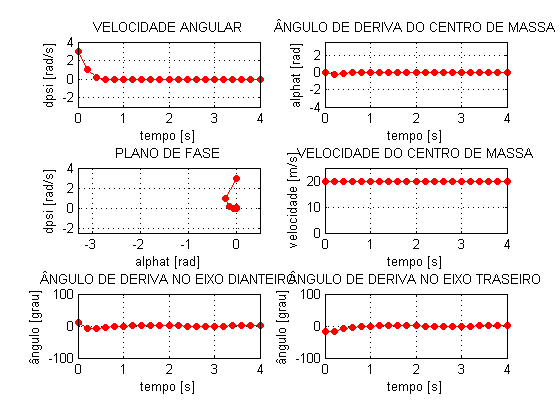

Comparação - dPSI = 3
Este script tem como objetivo comparar o resultado das combinações de modelos de pneu e veículos. Neste script o ângulo de esterçamento do pneu dianteiro é nulo e as condições iniciais nulas iguais a dPSI = 3 [rad/s] e vy = 0 [m/s]]
Contents
Vai ser o número de figuras
veiculoModeloVet = [1 2 3 4]; veiculoModeloTxt = char(' Linear 2 GDL',' Não linear 2 GDL',' Não linear 3 GDL'); %veiculoModeloTitulo4 = 'veiculoNaoLinear3gdlExtendido'; veiculoDados = 1; % Vai ser o número de curvas em cada figura pneuModeloVet = [1 2 3]; % Modelos 1-Linear; 2-Sadri; 3-Pacejka pneuModeloTxt = char('Linar','Sadri','Pacejka'); pneuModeloCor = char('r','g','b'); pneuModeloMarcador = char('o','s','d'); pneuDadosVet = [1 2 3]; for i = 1:length(veiculoModeloVet) for j = 1:length(pneuModeloVet)
veiculoModelo = veiculoModeloVet(i); pneuModelo = pneuModeloVet(j); pneuDados = pneuDadosVet(j);
%% Dados básicos da integração (integrador é chamado mais abaixo) if i ==4 && j == 2; T = 4; else T = 4; % Tempo total de simulação end TSPAN = 0:T/20:T; % Vetor de tempo de análise r0 = 3; % velocidade angular [rad/s] vy0 = 0; % velocidade lateral [m/s] v = 20; % velocidade longitudinal [m/s] -> ATENÇÃO: Tem que estar de acordo com os dados dos veículos com 2 gdl ALPHAT0 = asin(vy0/v); % conversão de vy0 para ALPHAT x0 = [r0 ; ALPHAT0]; % Condição inicial dos estados x0 = [x0 ; 0]; % Condição da orientacao x0 = [x0 ; 0 ; 0]; % Condição inicial da trajetória if veiculoModelo == 3 | veiculoModelo == 4 % Para que o integrador consiga rodar no modelo com 3 gdl é necessário acrescentar uma % condição inicial referente ao estado velocidade "v". % Ou seja, a velocidade que era prescrita antes agora é condição inicial x0 = [x0 ; v]; % Condição inicial da velocidade end [pneuFun veiculoFun pneuDadosFrente pneuDadosTras veiculoDadosVet pneuTxt veiculoTxt] = seletor(pneuModelo,pneuDados,veiculoModelo,veiculoDados); [TOUT,XOUT] = ode45(@(t,x) veiculoFun(t,x,pneuFun,pneuDadosFrente,pneuDadosTras,veiculoDadosVet),TSPAN,x0);
Undefined function or variable 'pneuSadriDados'. Error in seletor (line 21) pneuSadriDados Error in comparacaoDpsi3 (line 53) [pneuFun veiculoFun pneuDadosFrente pneuDadosTras veiculoDadosVet pneuTxt veiculoTxt] = seletor(pneuModelo,pneuDados,veiculoModelo,veiculoDados);
Reconstrução dos dados importantes
dPSI = XOUT(:,1); ALPHAT = XOUT(:,2); a = veiculoDadosVet(3); b = veiculoDadosVet(4); DELTA = veiculoDadosVet(6); if veiculoModelo == 1 % Ângulos de deriva ALPHAF = ALPHAT + a*dPSI/v - DELTA; % Dianteiro ALPHAR = ALPHAT - b*dPSI/v; % Traseiro % Módulo dos vetores velocidade VT = ones(length(dPSI),1)*v; % Centro de massa T % Ângulo de deriva para animação % Isso é feito pq para os modelos 3 e 4 a contagem do angulo é diferente da orientação do vetor para animação ALPHAFA = ALPHAF + DELTA; % Tem que somar o delta por que é o ângulo do vetor vel F em relação ao plano longitudinal ALPHARA = ALPHAR; end if veiculoModelo == 2 % Angulos de deriva não linear ALPHAF = atan((v*sin(ALPHAT) + a*dPSI)./(v*cos(ALPHAT))) - DELTA; % Dianteiro ALPHAR = atan((v*sin(ALPHAT) - b*dPSI)./(v*cos(ALPHAT))); % Traseiro % Vetor velocidade do centro de massa VT = ones(length(dPSI),1)*v; % Centro de massa T % Ângulo de deriva para animação % Isso é feito pq para os modelos 3 e 4 a contagem do angulo é diferente da orientação do vetor para animação ALPHAFA = ALPHAF + DELTA; ALPHARA = ALPHAR; end if veiculoModelo == 3 % Vetor velocidade do centro de massa VT = XOUT(:,6); v = VT; % Angulos de deriva não linear ALPHAF = atan((v.*sin(ALPHAT) + a*dPSI)./(v.*cos(ALPHAT))) - DELTA; % Dianteiro ALPHAR = atan((v.*sin(ALPHAT) - b*dPSI)./(v.*cos(ALPHAT))); % Traseiro % Ângulo de deriva para animação % Isso é feito pq para os modelos 3 e 4 a contagem do angulo é diferente da orientação do vetor para animação ALPHAFA = ALPHAF + DELTA; ALPHARA = ALPHAR; end if veiculoModelo == 4 % Vetor velocidade do centro de massa VT = XOUT(:,6); v = VT; numF = (v.*sin(ALPHAT) + a*dPSI); numR = (v.*sin(ALPHAT) - b*dPSI); den = (v.*cos(ALPHAT)); for u=1:length(ALPHAT) % Angulos de deriva não linear para plot em função do tempo ALPHAF(u) = atan(numF(u)/den(u)) - DELTA ; ALPHAR(u) = atan(numR(u)/den(u)); if den(u)<=0%ALPHAT(i)>=pi/2 & ALPHAT(i)<3/2*pi ALPHAF(u) = -atan(numF(u)/den(u)) - DELTA; ALPHAR(u) = -atan(numR(u)/den(u)); end % Ângulo de deriva para animação % Isso é feito pq para os modelos 3 e 4 a contagem do angulo é diferente da orientação do vetor para animação ALPHAFA(u) = atan((v(u)*sin(ALPHAT(u)) + a*dPSI(u))/(v(u)*cos(ALPHAT(u)))); ALPHARA(u) = atan((v(u)*sin(ALPHAT(u)) - b*dPSI(u))/(v(u)*cos(ALPHAT(u)))); if den(u)<=0%ALPHAT(i)>=pi/2 & ALPHAT(i)<3/2*pi ALPHAFA(u) = atan((v(u)*sin(ALPHAT(u)) + a*dPSI(u))/(v(u)*cos(ALPHAT(u)))) - pi; ALPHARA(u) = atan((v(u)*sin(ALPHAT(u)) - b*dPSI(u))/(v(u)*cos(ALPHAT(u)))) - pi; end end end % if veiculoModelo == 4 % end % Modulo do vetor velocidade VF = sqrt((VT.*sin(ALPHAT) + a*dPSI).^2 + (VT.*cos(ALPHAT)).^2); % Dianteiro VR = sqrt((VT.*sin(ALPHAT) - b*dPSI).^2 + (VT.*cos(ALPHAT)).^2); % Traseiro if j==2 tamanho = 7; else tamanho = 5; end fig = figure(i); %set(fig,'Position',[1 1 1000 750]) set(fig,'PaperPosition',[0.25 0.25 7 7.5]) subplot(3,2,1) hold on box on grid on H1 = plot(TOUT,XOUT(:,1),pneuModeloCor(j)); set(H1,'Marker',pneuModeloMarcador(j),'MarkerFaceColor',pneuModeloCor(j),'MarkerSize',tamanho) ax = get(H1,'Parent'); set(ax,'XLim',[0 4]) set(ax,'YLim',[-3 4]) title('VELOCIDADE ANGULAR'); ylabel('dpsi [rad/s]') xlabel('tempo [s]') if j == length(pneuModeloVet) leg = legend(pneuModeloTxt(1,:),pneuModeloTxt(2,:),pneuModeloTxt(3,:),'Location','SouthWest'); set(leg,'FontSize',7,'Box','on') end subplot(3,2,2) hold on box on grid on H1 = plot(TOUT,XOUT(:,2),pneuModeloCor(j)); set(H1,'Marker',pneuModeloMarcador(j),'MarkerFaceColor',pneuModeloCor(j),'MarkerSize',tamanho) ax = get(H1,'Parent'); set(ax,'XLim',[0 4]) set(ax,'YLim',[-4 3.5]) title('ÂNGULO DE DERIVA DO CENTRO DE MASSA'); ylabel('alphat [rad]') xlabel('tempo [s]') if j == length(pneuModeloVet) leg = legend(pneuModeloTxt(1,:),pneuModeloTxt(2,:),pneuModeloTxt(3,:),'Location','NorthEast'); set(leg,'FontSize',7,'Box','on') end subplot(3,2,3) hold on box on grid on H1 = plot(XOUT(:,2),XOUT(:,1),pneuModeloCor(j)); set(H1,'Marker',pneuModeloMarcador(j),'MarkerFaceColor',pneuModeloCor(j),'MarkerSize',tamanho) ax = get(H1,'Parent'); set(ax,'XLim',[-3.3 0.5]) set(ax,'YLim',[-2.5 4]) title('PLANO DE FASE') xlabel('alphat [rad]') ylabel('dpsi [rad/s]') if j == length(pneuModeloVet) leg = legend(pneuModeloTxt(1,:),pneuModeloTxt(2,:),pneuModeloTxt(3,:),'Location','SouthWest'); set(leg,'FontSize',7,'Box','on') end subplot(3,2,4) hold on box on grid on H1 = plot(TOUT,VT,pneuModeloCor(j)); set(H1,'Marker',pneuModeloMarcador(j),'MarkerFaceColor',pneuModeloCor(j),'MarkerSize',tamanho) ax = get(H1,'Parent'); set(ax,'YLim',[0 25]) title('VELOCIDADE DO CENTRO DE MASSA'); ylabel('velocidade [m/s]') xlabel('tempo [s]') if j == length(pneuModeloVet) leg = legend(pneuModeloTxt(1,:),pneuModeloTxt(2,:),pneuModeloTxt(3,:),'Location','SouthEast'); set(leg,'FontSize',7,'Box','on') end % Condicional reajustando para o caso i = 3 e 4 if i ==4 set(leg,'Location','East') end subplot(3,2,5) hold on box on grid on H1 = plot(TOUT,ALPHAF*180/pi,pneuModeloCor(j)); set(H1,'Marker',pneuModeloMarcador(j),'MarkerFaceColor',pneuModeloCor(j),'MarkerSize',tamanho) ax = get(H1,'Parent'); set(ax,'YLim',[-100 100]) title('ÂNGULO DE DERIVA NO EIXO DIANTEIRO') ylabel('ângulo [grau]') xlabel('tempo [s]') if j == length(pneuModeloVet) leg = legend(pneuModeloTxt(1,:),pneuModeloTxt(2,:),pneuModeloTxt(3,:),'Location','NorthEast'); set(leg,'FontSize',7,'Box','on') end % Condicional reajustando para o caso i = 3 e 4 if i == 3 | i ==4 set(ax,'YLim',[-100 200]) % set(leg,'Location','North') end subplot(3,2,6) hold on box on grid on H1 = plot(TOUT,ALPHAR*180/pi,pneuModeloCor(j)); set(H1,'Marker',pneuModeloMarcador(j),'MarkerFaceColor',pneuModeloCor(j),'MarkerSize',tamanho) ax = get(H1,'Parent'); set(ax,'YLim',[-100 100]) title('ÂNGULO DE DERIVA NO EIXO TRASEIRO') ylabel('ângulo [grau]') xlabel('tempo [s]') if j == length(pneuModeloVet) leg = legend(pneuModeloTxt(1,:),pneuModeloTxt(2,:),pneuModeloTxt(3,:),'Location','NorthEast'); set(leg,'FontSize',7,'Box','on') end % Condicional reajustando para o caso i = 3 if i == 3 set(ax,'YLim',[-100 200]) end
end ind = int2str(i); %print(fig,strcat('resultados/comparacaoDpsi3/comparacaoDpsi3_',ind,'.eps'),'-depsc2') end